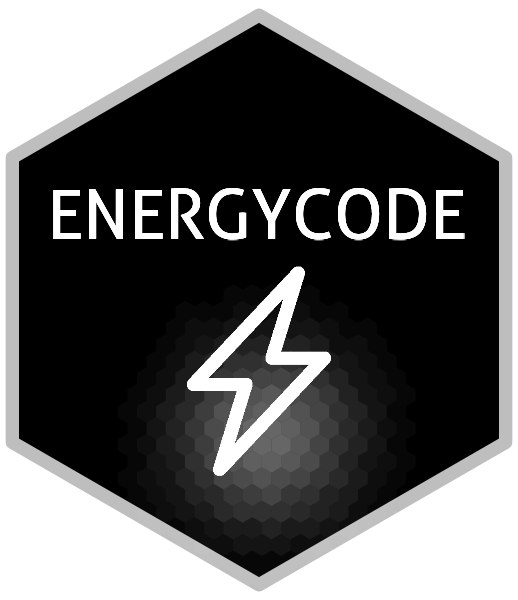

El paquete hexSticker
El paquete hexSticker creado por Guangchuang Yu [1] es una herramienta para generar stickers hexagonales reproducibles en R. Estos stickers son ideales como logos para paquetes de programación, blogs, proyectos o presentaciones. En este artículo post se muestra cómo crear el logo del la web ENERGYCODE usando una imagen extraída de un icono de un rayo blanco sobre un fondo negro, con ajustes para obtener el resultado deseado. Además, se soluciona el problema reportado en GitHub sobre que el borde hexagonal a veces se recorta al guardar en PNG o SVG (ver issue #155).
Archivos de entrada y salida
Código
file_icon <- "lightning_icon_white.png"
file_name <- "logo.png"Solución al recorte del borde del hexágono
El problema del borde recortado se soluciona ampliando ligeramente los límites del gráfico y es necesario modificar la función del tema gráfico que viene en el paquete hexStickerpor defecto. La siguiente función, adaptada de una contribución comunitaria, añade un margen extra para garantizar que el hexágono quede completo.
Código
# Solves issue:
# Border always cut off in .png or .svg #155
# https://github.com/GuangchuangYu/hexSticker/issues/155
# by https://github.com/emilioxavier
#| label: tema-personalizado
#| echo: true
library(ggplot2) # Para solución issue #155
my_theme_sticker <- function(size = 1.2, ...) {
center <- 1
radius <- 1
h <- radius
w <- sqrt(3) / 2 * radius
m <- 1.05
list(
theme_transparent() +
ggplot2::theme(
plot.margin = margin(
t = 0,
r = 0,
b = 0,
l = 0,
unit = "lines"
),
strip.text = element_blank(),
line = element_blank(),
text = element_blank(),
title = element_blank(),
...
),
coord_fixed(),
scale_y_continuous(
expand = c(0, 0),
limits = c(center - h * m , center + h * m)
),
scale_x_continuous(
expand = c(0, 0),
limits = c(center - w * m , center + w * m)
)
)
}Creación del sticker
Ahora generamos el logo ajustando posiciones, tamaños y colores.
Código
sticker(
subplot = file_icon,
package = "ENERGYCODE",
p_size = 18, # Tamaño del texto
p_y = 1.3, # Posición vertical del texto
p_color = "white",
h_fill = "black", # Fondo del hexágono
h_color = "grey", # Color del borde
h_size = 1.5, # Grosor del borde
s_x = 1, # Posición horizontal del icono
s_y = 0.75, # Posición vertical del icono
s_width = 0.35, # Ancho del icono
s_height = 0.35, # Alto del icono
spotlight = TRUE, # Efecto de luz opcional
l_x = 1.0, # Posición de la luz (ajustar si usas spotlight)
dpi = 300, # Alta resolución
filename = file_name,
theme = my_theme_sticker()
)Código
file_icon %>% sticker(package = 'ENERGYCODE',
p_size = 18, # font size for package name
p_y = 1.3,
h_fill = 'black',
h_color = 'grey',
h_size = 1.5,
s_x = 1,
s_y = 0.75,
spotlight = TRUE,
spot.size = 0.1,
s_width = 0.35,
s_height = 0.35,
dpi = 300,
asp = 1,
theme = my_theme_sticker(),
filename = file_name)Warning in ggplot2::annotate("text", x = x, y = y, size = size, label =
package, : Ignoring unknown parameters: `spot.size` and `theme`Resultado final
]
El logo generado tiene un aspecto sencillo, con el borde completo y listo para usar en cualquier sitio web o documentación. Se puede incluir fácilmente en un sitio Quarto añadiendo en _quarto.yml:
website:
title: "ENERGYCODE"
navbar:
logo: logo.pngReferencias
[1]
G. Yu, hexSticker: Create Hexagon Sticker in R. 2025. Disponible en: https://CRAN.R-project.org/package=hexSticker